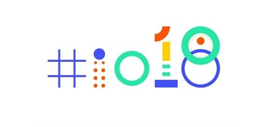
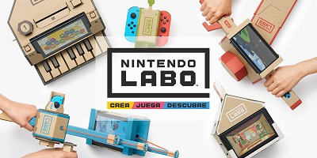
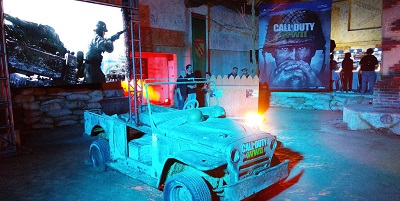

¿Cuándo se hará común la carrera universitaria de desarrollo de videojuegos?

La industria de los videojuegos es sumamente poderosa, no es necesario que les digamos eso, eso ustedes ya lo...
Leer más
La industria de los videojuegos es sumamente poderosa, no es necesario que les digamos eso, eso ustedes ya lo...
Leer más

El día de hoy Google llevo a cabo su evento anual I/O, en el que nos dio a conocer...Leer más

No cabe duda que Nintendo es una empresa que a veces acierta y a veces no, sin embargo, lo...Leer más

Nadie puede decir que la franquicia de Metal Gear Solid no es una de las más representativas del medio...Leer más

Una linda mañana del 3 de noviembre, parte del equipo de Epic Network se lanzó a la Ciudad de...Leer más